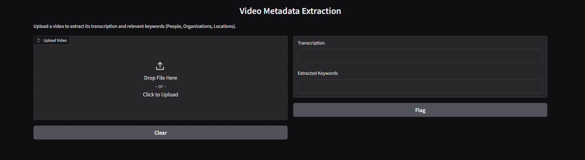

This project was developed to streamline the video production team's workflow by creating an efficient tool for extracting valuable metadata from video content. The primary goal was to build a system that automatically generates keywords, transcriptions, and other metadata from videos, allowing the team to easily categorize, search, and retrieve specific projects from a growing video library. The tool utilizes advanced technologies such as speech-to-text and Named Entity Recognition (NER). The speech-to-text component transcribes audio content, enabling an accurate textual representation of what is spoken in the video. NER is then applied to identify and extract key entities (e.g., names, locations, dates, and other important terms) from the transcription. These keywords and transcriptions are stored as metadata, which can be associated with each video in the library. By implementing this tool, we significantly improve the ease with which video content can be searched and accessed. Team members can now perform quick searches based on keywords, project names, or specific topics, greatly enhancing efficiency in locating relevant content and streamlining the video production process.
- Audio extraction from videos
- Real-time transcription using Wav2Vec2
- Keyword extraction using BERT for Named Entity Recognition
- Metadata storage in a CSV file for easy search and retrieval
- Easy-to-use search interface
# Import required libraries
import moviepy.editor as mp
from transformers import pipeline
# Load pre-trained model for speech-to-text
transcription_pipeline = pipeline("automatic-speech-recognition", model="facebook/wav2vec2-large-960h")
# Load video and extract audio
video = mp.VideoFileClip("video.mp4")
audio = video.audio
# Extract transcription from audio
audio_path = "audio.wav"
audio.write_audiofile(audio_path)
transcription = transcription_pipeline(audio_path)
print("Transcription: ", transcription["text"])